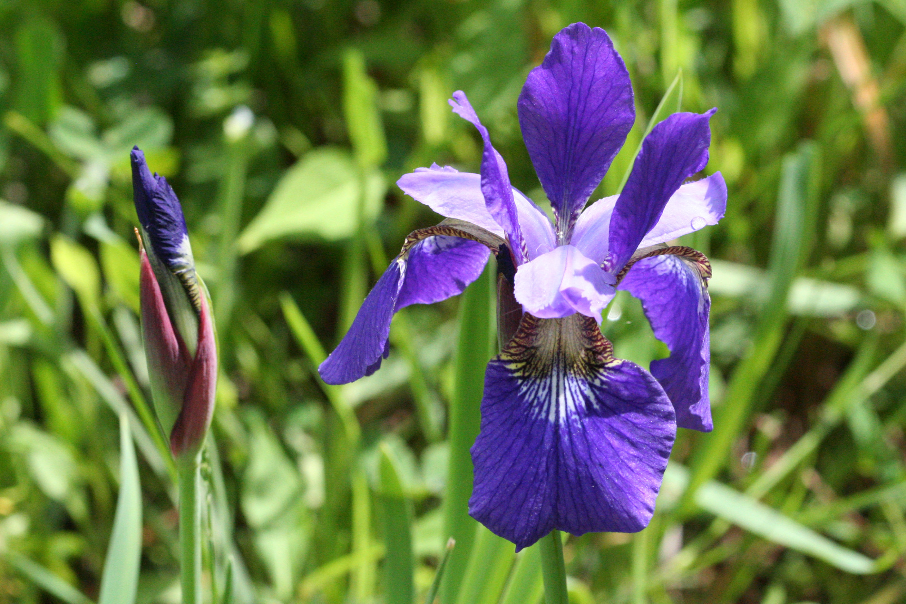
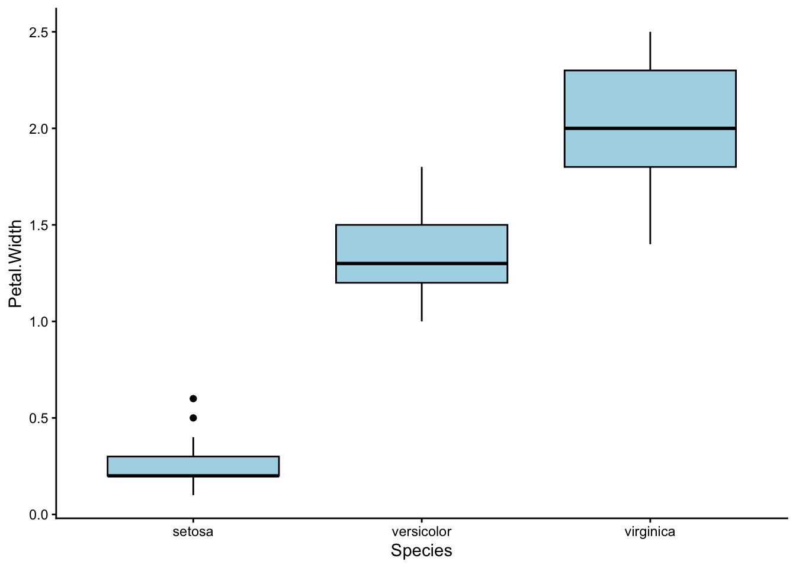
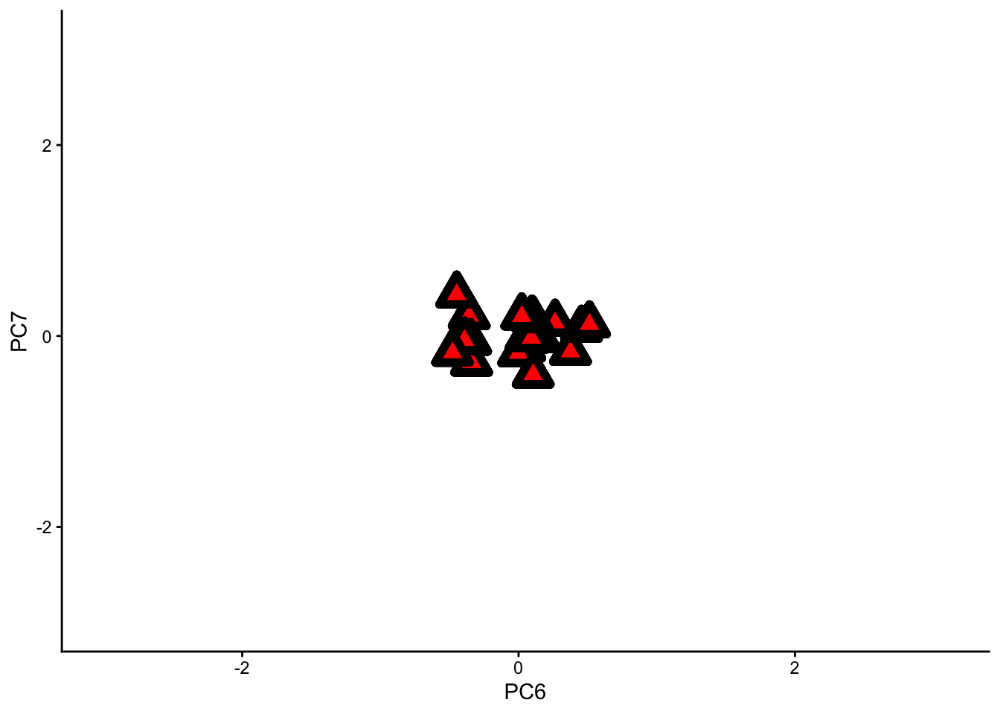

library(readr)
library(ggplot2)Learning Outcomes
In this lab, we will learn how to:
- Perform Principal Component Analysis (PCA) on various datasets
- Interpret the output of PCA and Factor Analysis (FA) – Loadings, biplot, screeplot, rotations
Specific goals
By the end of this lab, you should be able to:
Buckle Up!
Welcome to week 10. We hope you’ve had fun so far in ENVX2001 :) From now until the end of the course, we will dive into the world of multivariate statistics.
We’ve saved the best for last. Out of all the topics in this unit, multivariate statistics might just be the coolest one. In the beginning, you may find some aspects of this topic a little confusing; if that’s the case, please approach one of your demonstrators – they will happily help you out.
By the end of this lab, you will know how to explore multivariate datasets in a simple and intuitive way.
In particular, we will learn about a very common multivariate analysis technique: Principle Component Analysis, or PCA.
Preparation
To prepare for this lab, please activate the following packages:
And download these files: bumpus_sparrows_clean.csv, FactBeer.csv, kangaroo.csv
If you are a fan of learning from textbooks, here are some we recommend:
Quinn, G. P. and Keough, M. J. (2002, 2024) Experimental Design and Data Analysis for Biologists. Cambridge University Press.
Han, S. Y., Filippi, P., Román Dobarco, M., Harianto, J., Crowther M. S., and Bishop, T. F. A. (2023). Multivariate analysis for soil science. In ‘Encyclopedia of Soils in the Environment (Second Edition)’. (Ed. M. J. Goss and M. Oliver) pp. 499-508. Academic Press: Oxford.
It is also a good idea to have pen and paper (or stylus and ipad) in hand while you go through this lab. One of the best ways to make sense of multivariate statistics is to draw lots of pictures.
Ready? Let’s get started!
Part 1: Why PCA? When PCA? Who PCA?
In the last 9 weeks of ENVX2001, we learned about t-tests, ANOVAs, simple linear regressions, multiple linear regressions, interactions, blocking terms …
That’s a lot of statistical tools already. Do we really need more?
Well, let’s see.
Exercise: Irises

The beautiful Iris versicolor , also called the harlequin blueflag, a species of wildflower native to the marshes of North America. From Wikimedia Commons (2016), by R. A. Nonenmacher.
One of my personal favourite datasets to explore, for almost any kind of analysis, is the iris dataset, which contains floral measurements from three different species of irises: Iris versicolour, Iris setosa, and Iris virginica.
This dataset actually has a rather shady past; it was originally published in the ‘Annals of Eugenics’ by Ronald Fisher, one of the most influential figures in 20th Century Statistics, and a pretty controversial person. 1
1 FISHER, R. A. (1936). THE USE OF MULTIPLE MEASUREMENTS IN TAXONOMIC PROBLEMS. Annals of Eugenics, 7(2), 179–188. https://doi.org/10.1111/j.1469-1809.1936.tb02137.x
2 FISHER, R. A. (1958). Cancer and Smoking. Nature, 182(4635), 596–596. https://doi.org/10.1038/182596a0
Fisher invented brilliant statisical concepts such as the F-Distribution (F for Fisher, if you were wondering) and the Analysis of Variance (ANOVA), but he also endorsed eugenics, feuded with his fellow academics, and refused to believe that smoking could increase the risk of lung cancer. 2
A good example of how complex people can be, I suppose.
Fortunately for us, the ‘Annals of Eugenics’ was brought down a long time ago, but the iris dataset survived as a training tool for statisticians.
The iris dataset is built into R itself, and conveniently named iris. We can summon it like this:
NoteThe iris dataset
iris # It's LONG Sepal.Length Sepal.Width Petal.Length Petal.Width Species
1 5.1 3.5 1.4 0.2 setosa
2 4.9 3.0 1.4 0.2 setosa
3 4.7 3.2 1.3 0.2 setosa
4 4.6 3.1 1.5 0.2 setosa
5 5.0 3.6 1.4 0.2 setosa
6 5.4 3.9 1.7 0.4 setosa
7 4.6 3.4 1.4 0.3 setosa
8 5.0 3.4 1.5 0.2 setosa
9 4.4 2.9 1.4 0.2 setosa
10 4.9 3.1 1.5 0.1 setosa
11 5.4 3.7 1.5 0.2 setosa
12 4.8 3.4 1.6 0.2 setosa
13 4.8 3.0 1.4 0.1 setosa
14 4.3 3.0 1.1 0.1 setosa
15 5.8 4.0 1.2 0.2 setosa
16 5.7 4.4 1.5 0.4 setosa
17 5.4 3.9 1.3 0.4 setosa
18 5.1 3.5 1.4 0.3 setosa
19 5.7 3.8 1.7 0.3 setosa
20 5.1 3.8 1.5 0.3 setosa
21 5.4 3.4 1.7 0.2 setosa
22 5.1 3.7 1.5 0.4 setosa
23 4.6 3.6 1.0 0.2 setosa
24 5.1 3.3 1.7 0.5 setosa
25 4.8 3.4 1.9 0.2 setosa
26 5.0 3.0 1.6 0.2 setosa
27 5.0 3.4 1.6 0.4 setosa
28 5.2 3.5 1.5 0.2 setosa
29 5.2 3.4 1.4 0.2 setosa
30 4.7 3.2 1.6 0.2 setosa
31 4.8 3.1 1.6 0.2 setosa
32 5.4 3.4 1.5 0.4 setosa
33 5.2 4.1 1.5 0.1 setosa
34 5.5 4.2 1.4 0.2 setosa
35 4.9 3.1 1.5 0.2 setosa
36 5.0 3.2 1.2 0.2 setosa
37 5.5 3.5 1.3 0.2 setosa
38 4.9 3.6 1.4 0.1 setosa
39 4.4 3.0 1.3 0.2 setosa
40 5.1 3.4 1.5 0.2 setosa
41 5.0 3.5 1.3 0.3 setosa
42 4.5 2.3 1.3 0.3 setosa
43 4.4 3.2 1.3 0.2 setosa
44 5.0 3.5 1.6 0.6 setosa
45 5.1 3.8 1.9 0.4 setosa
46 4.8 3.0 1.4 0.3 setosa
47 5.1 3.8 1.6 0.2 setosa
48 4.6 3.2 1.4 0.2 setosa
49 5.3 3.7 1.5 0.2 setosa
50 5.0 3.3 1.4 0.2 setosa
51 7.0 3.2 4.7 1.4 versicolor
52 6.4 3.2 4.5 1.5 versicolor
53 6.9 3.1 4.9 1.5 versicolor
54 5.5 2.3 4.0 1.3 versicolor
55 6.5 2.8 4.6 1.5 versicolor
56 5.7 2.8 4.5 1.3 versicolor
57 6.3 3.3 4.7 1.6 versicolor
58 4.9 2.4 3.3 1.0 versicolor
59 6.6 2.9 4.6 1.3 versicolor
60 5.2 2.7 3.9 1.4 versicolor
61 5.0 2.0 3.5 1.0 versicolor
62 5.9 3.0 4.2 1.5 versicolor
63 6.0 2.2 4.0 1.0 versicolor
64 6.1 2.9 4.7 1.4 versicolor
65 5.6 2.9 3.6 1.3 versicolor
66 6.7 3.1 4.4 1.4 versicolor
67 5.6 3.0 4.5 1.5 versicolor
68 5.8 2.7 4.1 1.0 versicolor
69 6.2 2.2 4.5 1.5 versicolor
70 5.6 2.5 3.9 1.1 versicolor
71 5.9 3.2 4.8 1.8 versicolor
72 6.1 2.8 4.0 1.3 versicolor
73 6.3 2.5 4.9 1.5 versicolor
74 6.1 2.8 4.7 1.2 versicolor
75 6.4 2.9 4.3 1.3 versicolor
76 6.6 3.0 4.4 1.4 versicolor
77 6.8 2.8 4.8 1.4 versicolor
78 6.7 3.0 5.0 1.7 versicolor
79 6.0 2.9 4.5 1.5 versicolor
80 5.7 2.6 3.5 1.0 versicolor
81 5.5 2.4 3.8 1.1 versicolor
82 5.5 2.4 3.7 1.0 versicolor
83 5.8 2.7 3.9 1.2 versicolor
84 6.0 2.7 5.1 1.6 versicolor
85 5.4 3.0 4.5 1.5 versicolor
86 6.0 3.4 4.5 1.6 versicolor
87 6.7 3.1 4.7 1.5 versicolor
88 6.3 2.3 4.4 1.3 versicolor
89 5.6 3.0 4.1 1.3 versicolor
90 5.5 2.5 4.0 1.3 versicolor
91 5.5 2.6 4.4 1.2 versicolor
92 6.1 3.0 4.6 1.4 versicolor
93 5.8 2.6 4.0 1.2 versicolor
94 5.0 2.3 3.3 1.0 versicolor
95 5.6 2.7 4.2 1.3 versicolor
96 5.7 3.0 4.2 1.2 versicolor
97 5.7 2.9 4.2 1.3 versicolor
98 6.2 2.9 4.3 1.3 versicolor
99 5.1 2.5 3.0 1.1 versicolor
100 5.7 2.8 4.1 1.3 versicolor
101 6.3 3.3 6.0 2.5 virginica
102 5.8 2.7 5.1 1.9 virginica
103 7.1 3.0 5.9 2.1 virginica
104 6.3 2.9 5.6 1.8 virginica
105 6.5 3.0 5.8 2.2 virginica
106 7.6 3.0 6.6 2.1 virginica
107 4.9 2.5 4.5 1.7 virginica
108 7.3 2.9 6.3 1.8 virginica
109 6.7 2.5 5.8 1.8 virginica
110 7.2 3.6 6.1 2.5 virginica
111 6.5 3.2 5.1 2.0 virginica
112 6.4 2.7 5.3 1.9 virginica
113 6.8 3.0 5.5 2.1 virginica
114 5.7 2.5 5.0 2.0 virginica
115 5.8 2.8 5.1 2.4 virginica
116 6.4 3.2 5.3 2.3 virginica
117 6.5 3.0 5.5 1.8 virginica
118 7.7 3.8 6.7 2.2 virginica
119 7.7 2.6 6.9 2.3 virginica
120 6.0 2.2 5.0 1.5 virginica
121 6.9 3.2 5.7 2.3 virginica
122 5.6 2.8 4.9 2.0 virginica
123 7.7 2.8 6.7 2.0 virginica
124 6.3 2.7 4.9 1.8 virginica
125 6.7 3.3 5.7 2.1 virginica
126 7.2 3.2 6.0 1.8 virginica
127 6.2 2.8 4.8 1.8 virginica
128 6.1 3.0 4.9 1.8 virginica
129 6.4 2.8 5.6 2.1 virginica
130 7.2 3.0 5.8 1.6 virginica
131 7.4 2.8 6.1 1.9 virginica
132 7.9 3.8 6.4 2.0 virginica
133 6.4 2.8 5.6 2.2 virginica
134 6.3 2.8 5.1 1.5 virginica
135 6.1 2.6 5.6 1.4 virginica
136 7.7 3.0 6.1 2.3 virginica
137 6.3 3.4 5.6 2.4 virginica
138 6.4 3.1 5.5 1.8 virginica
139 6.0 3.0 4.8 1.8 virginica
140 6.9 3.1 5.4 2.1 virginica
141 6.7 3.1 5.6 2.4 virginica
142 6.9 3.1 5.1 2.3 virginica
143 5.8 2.7 5.1 1.9 virginica
144 6.8 3.2 5.9 2.3 virginica
145 6.7 3.3 5.7 2.5 virginica
146 6.7 3.0 5.2 2.3 virginica
147 6.3 2.5 5.0 1.9 virginica
148 6.5 3.0 5.2 2.0 virginica
149 6.2 3.4 5.4 2.3 virginica
150 5.9 3.0 5.1 1.8 virginica
NoteBuilding Habits
Check the structure of the iris dataset using the str() function.
It looks like the iris dataset contains quite a few variables. In particular, we have four response variables to test: sepal width, sepal length, petal width, and petal length (check out this page to learn more about flower anatomy). All of these are measured in centimeters.
Our first instinct might be to analyse them one at a time. Let’s see how that works out:
NoteBuilding Habits
Choose one of the four response variables in iris, and use ggplot2 to make a box plot. What do you think? Is there a difference between the three iris species?
Depending on which response variable you chose, you may or may not have seen much of a difference between the three species.
For example, Iris setosa certainly seems to have shorter petals than the other two species:
ggplot(iris, aes(x = Species, y = Petal.Length)) +
geom_boxplot(colour = 'black', fill = 'lightblue')+
theme_classic()
Let’s run a one-way ANOVA to check.
NoteSharpen your skills
Use a one-way ANOVA to test whether petal length differs between the three iris species.
Tip
To run a one-way ANOVA in R, use the function aov(). Remember that petal length is the response variable in this case, and iris species is the explanatory variable.
Structure your data as: aov(response_variable ~ explanatory_variable, data = iris).
TipSolution
Here’s what we did:
ANOVA_petal_length <- aov(Petal.Length ~ Species, data =iris) # Runs the test
summary(ANOVA_petal_length) # Prints the output Df Sum Sq Mean Sq F value Pr(>F)
Species 2 437.1 218.55 1180 <2e-16 ***
Residuals 147 27.2 0.19
---
Signif. codes: 0 '***' 0.001 '**' 0.01 '*' 0.05 '.' 0.1 ' ' 1We found a p-value of < 0.001, which means that at least one of the three iris species has a different average petal length to the others.
So… case closed? The irises are different, time to move on?
Not so fast. Petal length is just one out of four response variables we could have analysed. What about the other three? Should we run 3 more ANOVAs?
Unfortunately, performing multiple ANOVAs will run us into a series of problems.
First, we have the multiple comparisons problem. We won’t discuss this topic in detail; but if you want to read up on it, I have linked an article here. 3
3 Ranganathan, P., Pramesh, C., & Buyse, M. (2016). Common pitfalls in statistical analysis: The perils of multiple testing. Perspectives in Clinical Research, 7(2), 106. https://doi.org/10.4103/2229-3485.179436
Second, we have the problem of wasting our time. Really. You should be hanging out with your friends instead of running ANOVAs over and over.
Remember the plot for petal length from earlier? Check out this plot for petal width:
ggplot(iris, aes(x = Species, y = Petal.Width)) +
geom_boxplot(colour = 'black', fill = 'lightblue')+
theme_classic()
Looks… almost the same, right?
That is because in our dataset, petal length and petal width are positively correlated – the iris species with long petals also tend to have wide petals. In fact, we could really combine petal width and length into a single characteristic: petal size.
By now, we are used to thinking about correlations between explanatory and response variables – these are often the “effects” we look for in our experiments. We have also learned how to handle correlations between multiple explanatory variables – recall our labs in weeks 7-9, where we learned about linear regression.
However, this time we need to deal with correlations between multiple response variables, a situation we have never encountered before.
How do we do that? Enter multivariate statistics.

City view from the Kuala Lumpar Tower, Malaysia. The magic of photographs lie in their ability to project 3D objects onto 2D planes without losing a sense of reality. From Wikimedia Commons (2018), by itsfatxn.
Practice: Take a Picture
All forms of multivariate statistics share a common goal: to distill a large collection of response variables into a small set of useful information.
This process is called dimension reduction. I like to think of it as using mathematics to create a simple, low-dimensional (usually 2D) picture out of a complex, higher-dimensional (usually 4D+) situation.
To push this analogy further, think of all the different tools and techniques artists use to depict the world around them. As science students, we also have a rich collection of tools with which to handle multivariate data.
Principle Component Analysis (PCA) is very much like an artist’s camera. Next week, we will learn about Cluster Analysis, which works more like a paintbrush. In week 12, we will encounter Non-metric Multidimensional Scaling (nMDS), which I like to think of as the pen-and-ink doodles of the statistical world.

A set of vintage cameras. Photography is one of many ways to compress the 3D world into a 2D image. From Wikimedia Commons (2014), by Jeff Sheldon.
I say PCA is like a camera, because it reduces the dimension of our sample space by directly projecting each sample point onto a lower dimensional plane. In technical terms, this is known as creating a linear map.
Not all dimension reduction techniques work this way. Some preserve the relative distance or rank distance between points instead. We will talk more about these ordination techniques in week 12.
TipHow come my sample points live in multi-dimensional space?
Each time we take a sample of anything (plants, soil, fur, etc.) we can measure many different characteristics.
In univariate analysis, we only measure one characteristic; for example, soil pH. This gives us a single value per sample, which we can then plot on a number-line. The corresponding analysis will then be an ANOVA.
In multivariate analysis, however, we can measure multiple characteristics; for example, soil pH along with soil texture, soil moisture, and soil nutrients. We can’t plot these measurements on a single number line anymore – we need one axis for each measurement.
This is how your sample points can end up in multi-dimensional space. If you measure 8 response variables from each of your samples, then your data must occupy an 8-dimensional mathematical space.
In the case of the iris dataset, we have 4 response variables. This means our sample points live in 4-dimensional space. We have to find a way to bring them down to 3 or 2-dimensions if we want to plot them nicely.
NoteSharpen your skills
Import the kangaroo.csv dataset using read.csv(), and name it kangaroo.
Check the structure of this dataset using str(). Compare it to the structure of the iris dataset.
How many response variables does
kangaroohave? Is this more or fewer thaniris? What dimensional space do the each of these datasets occupy?Recall that petal width and petal length were positively correlated in
iris. Which response variables inkangarooare positively correlated with each other?
Tip
To check which variables are correlated in a dataset, you can use the pairs() function. Try it with the iris dataset first: pairs(iris).
Note
The column names in kangaroo are as follows:
- BLEN = basillar length
- PLEN = palatilar length
- OLEN = occipitonasal length
- NLEN = nasal length
- PWID = palate width
- SPECIES = 1: Eastern Grey Kangaroo (M. giganteus), 2: Western Grey Kangaroo (M. fuliginosus)
TipSolution
First, we read in the dataset and check its structure:
kangaroo <- read.csv('data/kangaroo.csv')
str(kangaroo)'data.frame': 27 obs. of 6 variables:
$ BLEN : int 1439 1315 1294 1377 1470 1612 1388 1575 1717 1587 ...
$ PLEN : int 985 895 872 954 987 1119 936 1100 1184 1115 ...
$ OLEN : int 1503 1367 1421 1504 1563 1699 1500 1655 1821 1711 ...
$ NLEN : int 629 564 606 660 672 778 616 727 810 778 ...
$ PWID : int 230 230 239 248 236 281 227 295 307 293 ...
$ SPECIES: int 1 1 1 1 1 1 1 1 1 1 ...- There are 5 response variables here (BLEN, PLEN, OLEN, NLEN, and PWID), and one explanatory variable (SPECIES). In the
irisdataset, we only had 4 response variables.
This means the sample points in kangaroo occupy 5 dimensional space, while the sample points in iris occupy 4 dimensional space.
Now, we can look for correlations between our variables. But we have to be a little bit clever here – we don’t want to include our explanatory variable SPECIES in our pairs plot, so we use [,] to select only the first 5 columns before applying pairs():
pairs(kangaroo[,1:5])
It looks like just about all of our response variables are positively correlated with each other. This means that kangaroos with longer noses also had longer and wider palattes, etc.
Earlier, we mentioned that a PCA works by taking a 2D photograph of a multi-dimensional situation. This is only partly true. In reality, the real power of a PCA lies in what it does before it takes this photograph.
Thought Experiment
Picture a bicycle – a real, solid bicycle that you can push around and ride. One day, you are commissioned to take a photograph of this bicycle for an information brochure. This brochure is meant to help people understand how a bicycle works by pointing out its various parts. Which angle would you take your photograph from?
This angle?

A Roadster (Dutch) bicycle, side view. From Wikimedia Commons (2018), by Petar Milošević.
Or this angle?

Two bicycles on 23 Foster St, Boston, United States, front and back views. From Wikimedia Commons (2016), by Myles Tan.
When we reduce the number of dimensions in our data, we inevitably lose information. Even the best photographs cannot show you all sides of an object. Because of this, we need to be very careful which angle we take our photograph from, so as to lose the least amount of information.
In the bicycle example, the first angle is the one I would prefer. This is because it shows me more of the bicycle than the second. The second picture is lovely, but it would make a poor addition to any information brochure, because most of the bicycle parts are hidden.
The real power of a PCA is in its ability to rotate a multidimensional sample space until it finds the best angle from which to take a photograph of your data points. It does this through either one of two mathematical procedures: eigenvalue decomposition, or singular value decomposition.
In our case, we will use the built-in R function prcomp() to perform our PCAs, which is based on singular value decomposition. Do not worry if you are not familiar with singular value decomposition; R will handle that step for you automatically.
Part 2: How to Perform a PCA Without Panicking

Beer in Berlin. From Wikimedia Commons (2004), by k.ivoutin; Flickr: https://www.flickr.com/photos/ivoutin/1403816845/.
Exercise: Go Home, Eigenvalues. You’re Drunk.
What makes a good beer? That was not my attempt to distract you – in fact, it was questions like these that first led psychologists and mathematicians to join forces and develop multivariate techniques. 4
4 Groenen, P. J. F., Borg, I., Blasius, J., & Greenacre, M. J. (2014). The Past, Present, and Future of Multidimensional Scaling. Visualization and verbalization of data (pp. 96–116). Crc Press, Taylor & Francis Group.
5 Ikasari, D. M., & Lestari, E. R. (2019). Analysis of fast food restaurant competition based on consumer perception using multidimensional scaling (MDS) (case study in Malang City, East Java, Indonesia). IOP Conference Series: Earth and Environmental Science, 230. https://doi.org/10.1088/1755-1315/230/1/012060
Psychologists realised that people made even very simple decisions, such as which restaurants to visit or what clothes to buy, based on a huge number of interacting variables where the weight of any one variable is unclear. 5
For example, if you could walk out of this lab right now (don’t do it) and have a bite to eat, what would you go for? Rice paper rolls? Ramen? Pizza? How many variables might contribute to that decision? Price would be one, for sure. Taste might be another. What about the distance to the nearest Italian restaurant vs the nearest Japanese restaurant?
Some of these variables might turn out to correlate with one another. For example, you may find that people who prefer restaurants that are nearby also tend to prefer restaurants that are affordable. We can combine these two variables together into one: “accessibility”.
PCA deals with this by creating new set of response variables called principle components, or PCs – but more on that later.
I’ll stop tempting you with food for now. Let’s get back to beer instead. Here are seven variables that people normally use to judge the quality of a beer:
NoteSeven influential variables in a beer
- Cost
- Bottle size
- Alcohol content
- Brand reputation
- Colour
- Aroma
- Taste
220 customers were asked to rate each of these variables from 0 to 100 based on how important they judge that variable to be. For example, a customer who scores “Cost” as 0 and “Brand Reputation” as 100 cares more about beer clout than financial security; whereas a customer who scores “Cost” as 100 and “Brand Reputation” as 0 just wants some free booze.
Let’s take a look at this dataset.
NoteBuilding Habits
Read the dataset FactBeer.csv into R and check its structure. Rename the dataset beer.
TipSolution
We can use the read.csv() function to read in our dataset, and the str() function to check its structure.
beer <- read.csv("data/FactBeer.csv")
str(beer)'data.frame': 220 obs. of 7 variables:
$ cost : int 90 75 10 100 20 50 5 65 95 85 ...
$ size : int 80 95 15 70 10 100 15 30 95 80 ...
$ alcohol: int 70 100 20 50 25 100 15 35 100 70 ...
$ reputat: int 20 50 85 30 35 30 75 80 0 40 ...
$ color : int 50 55 40 75 30 90 20 80 80 60 ...
$ aroma : int 70 40 30 60 35 75 10 60 70 50 ...
$ taste : int 60 65 50 80 45 100 25 90 95 65 ...All the variables in this dataset are numeric.
NoteBuilding Habits
How many variables does the beer dataset have? Can we treat all of them as response variables?
TipSolution
This might seem like a trick question at first glance, because how can every variable be a response variable? We need an explanatory variable somewhere, don’t we?
As strange as it might seem, we can in fact treat all 7 variables in FactBeer as response variables, and this is exactly what we will do for this exercise. What this means, however, is that our subsequent analyses will be descriptive rather than deductive/inferential.
Researchers often use descriptive studies to refine their research questions. Then, they follow up on these questions with more rigorous, inferential tests. Think of descriptive statistics as a special case of Exploratory Data Analysis (EDA), if you will.
WarningHow do I know if my study is multivariate?
No strict rule dictates whether your study should be univariate or multivariate. As a researcher, you are free to choose your response and explanatory variables depending on your research question. Whether you decide to choose multiple response variables or not is up to you.
As a rule of thumb, whenever you are given a large dataset with more than three numeric variables, be aware that multivariate analysis is an option available to you.
Our beer dataset definitely fits the criteria for multivariate analysis. We will treat all 7 variables in this dataset as response variables, and see if we can spot any patterns in them using a PCA.
To run the PCA, we use the prcomp() function in R:
pca_beer <- prcomp(beer, scale = TRUE)PCA done – it’s that easy! Everything is over in a flash, just like taking a photograph.
R stores the results of our PCA as a dataset, from which we need to pull out the very important ‘rotation’ column:
NoteThe ‘rotation’ column
round(pca_beer$rotation,6) PC1 PC2 PC3 PC4 PC5 PC6 PC7
cost -0.302309 -0.454046 0.084258 0.784602 -0.031082 -0.255689 -0.115793
size -0.366651 -0.417510 0.310547 -0.174129 0.213427 0.469571 0.546301
alcohol -0.347204 -0.432492 0.086555 -0.578538 -0.275153 -0.364266 -0.376567
reputat 0.404031 0.043831 0.884035 0.018842 -0.101951 -0.204916 0.024101
color -0.417815 0.356163 0.307245 0.085150 0.056377 0.487470 -0.596761
aroma -0.404393 0.379468 0.106137 -0.075887 0.595065 -0.541660 0.167180
taste -0.390233 0.399636 0.042278 0.077508 -0.714212 -0.091785 0.402108# I used the `round()` function to round everything to 6dcp. You don't have to do this.We can then see our results by running summary():
NoteA summary of our PCA results
summary(pca_beer) # Tells us how much variance each PC explains.Importance of components:
PC1 PC2 PC3 PC4 PC5 PC6 PC7
Standard deviation 1.8201 1.6173 0.75804 0.48978 0.36668 0.29231 0.19206
Proportion of Variance 0.4733 0.3737 0.08209 0.03427 0.01921 0.01221 0.00527
Cumulative Proportion 0.4733 0.8470 0.92905 0.96332 0.98252 0.99473 1.00000What do these numbers mean? We will talk about that in the next section. For now, let’s practice running a few more PCAs using the prcomp() function to get you comfortable with the process.

A young eastern grey kangaroo (Macropus giganteus) in Majura Nature Reserve, ACT. From Wikimedia Commons (2016), by Thennicke.
Practice: You’re Multidimensional (I Think That’s a Compliment)
Your turn! Let’s bring back the iris and kangaroo datasets.
NoteSharpen your skills
Re-open the iris and kangaroo datasets, and check their structure.
TipSolution
Easy. We named them earlier, so now we can check their structure using the str() function:
str(iris) # the iris dataset'data.frame': 150 obs. of 5 variables:
$ Sepal.Length: num 5.1 4.9 4.7 4.6 5 5.4 4.6 5 4.4 4.9 ...
$ Sepal.Width : num 3.5 3 3.2 3.1 3.6 3.9 3.4 3.4 2.9 3.1 ...
$ Petal.Length: num 1.4 1.4 1.3 1.5 1.4 1.7 1.4 1.5 1.4 1.5 ...
$ Petal.Width : num 0.2 0.2 0.2 0.2 0.2 0.4 0.3 0.2 0.2 0.1 ...
$ Species : Factor w/ 3 levels "setosa","versicolor",..: 1 1 1 1 1 1 1 1 1 1 ...str(kangaroo) # the kangaroo dataset'data.frame': 27 obs. of 6 variables:
$ BLEN : int 1439 1315 1294 1377 1470 1612 1388 1575 1717 1587 ...
$ PLEN : int 985 895 872 954 987 1119 936 1100 1184 1115 ...
$ OLEN : int 1503 1367 1421 1504 1563 1699 1500 1655 1821 1711 ...
$ NLEN : int 629 564 606 660 672 778 616 727 810 778 ...
$ PWID : int 230 230 239 248 236 281 227 295 307 293 ...
$ SPECIES: int 1 1 1 1 1 1 1 1 1 1 ...Notice that both iris and kangaroo have categorical variables (“Species” for iris and “SPECIES” for kangaroo) as their last columns. Let’s remove these columns before we proceed with our PCA.
NoteSharpen your skills
Use the [,] function to remove the last columns of iris and kangaroo respectively. Then, use the <- operator to give these newly-cropped datasets their own names.
TipSolution
Remember that to filter for columns, we use the space behind the comma [,*]:
iris_cropped <- iris[,1:4] # columns 1 to 4 of the iris dataset
kangaroo_cropped <- kangaroo[,1:5] # columns 1 to 5 of the kangaroo datasetNow go for it! Run a PCA on the iris dataset.
NoteSharpen your skills
Use the prcomp() function to perform a PCA on the iris dataset.
Tip
Instead of scale = TRUE, you can use scale = FALSE for this PCA. You don’t have to scale your variables if they are all measured in the same units (in this case, centimeters).
TipSolution
One line of code should do the trick. Remember to use your cropped dataset, not the original iris:
pca_iris <- prcomp(iris_cropped, scale = FALSE) # I used "<-" to name it "pca_iris".Easy? Summarise your results.
NoteSharpen your skills
Select the “rotation” column from your PCA, and run summary() on your results.
Tip
Remember that you can select columns by name using the $ operator.
TipSolution
The “rotation” column:
pca_iris$rotation PC1 PC2 PC3 PC4
Sepal.Length 0.36138659 -0.65658877 0.58202985 0.3154872
Sepal.Width -0.08452251 -0.73016143 -0.59791083 -0.3197231
Petal.Length 0.85667061 0.17337266 -0.07623608 -0.4798390
Petal.Width 0.35828920 0.07548102 -0.54583143 0.7536574Results summary:
summary(pca_iris)Importance of components:
PC1 PC2 PC3 PC4
Standard deviation 2.0563 0.49262 0.2797 0.15439
Proportion of Variance 0.9246 0.05307 0.0171 0.00521
Cumulative Proportion 0.9246 0.97769 0.9948 1.00000That’s it! You have just performed your first PCA. Do you think you can do the whole thing by yourself without any hints? Give it a try:
NoteSharpen your skills
Perform a PCA on the kangaroo_cropped dataset, extracting both the “rotation” column and the results summary.
TipSolution
Check the structure of kangaroo_cropped:
str(kangaroo_cropped) 'data.frame': 27 obs. of 5 variables:
$ BLEN: int 1439 1315 1294 1377 1470 1612 1388 1575 1717 1587 ...
$ PLEN: int 985 895 872 954 987 1119 936 1100 1184 1115 ...
$ OLEN: int 1503 1367 1421 1504 1563 1699 1500 1655 1821 1711 ...
$ NLEN: int 629 564 606 660 672 778 616 727 810 778 ...
$ PWID: int 230 230 239 248 236 281 227 295 307 293 ...We have 5 response variables and they are all numeric, so we can proceed with multivariate analysis.
Perform the PCA:
pca_kangaroo <- prcomp(kangaroo_cropped)Extract the “rotation” column:
pca_kangaroo$rotation PC1 PC2 PC3 PC4 PC5
BLEN 0.58361875 -0.6506053 -0.16256188 -0.03837344 -0.4562927
PLEN 0.44909213 -0.1860983 0.55797993 0.26346878 0.6188104
OLEN 0.58327608 0.4672692 -0.34309615 -0.51343366 0.2451927
NLEN 0.32970748 0.5027396 -0.07404816 0.72415472 -0.3296403
PWID 0.09374119 0.2664444 0.73418931 -0.37562947 -0.4899883Summarise the results:
summary(pca_kangaroo)Importance of components:
PC1 PC2 PC3 PC4 PC5
Standard deviation 295.5783 34.6311 21.40951 16.50136 13.25427
Proportion of Variance 0.9765 0.0134 0.00512 0.00304 0.00196
Cumulative Proportion 0.9765 0.9899 0.99499 0.99804 1.00000How did you go?
Part 3: Admiring Your Handiwork

Boule, a classic French bread. Bakers take a long time to prepare their loaves beforehand, even though the baking process itself is taken care of by their ovens. Bakers must take their loaves out of their ovens at the right time to slice, decorate, and package each loaf nicely for their customers. We should do the same with our PCA results. From Wikimedia Commons (2014), by Lehightrails.
Now that the technical part is done, let’s take some time to admire what we have created.
We will revisit the results of our beer dataset and see what they tell us.
Exercise: New Year, New Me, New Variables
As a reminder, here are the results from our beer PCA:
NoteThe “rotation” column, rounded to 6dcp
round(pca_beer$rotation,6) PC1 PC2 PC3 PC4 PC5 PC6 PC7
cost -0.302309 -0.454046 0.084258 0.784602 -0.031082 -0.255689 -0.115793
size -0.366651 -0.417510 0.310547 -0.174129 0.213427 0.469571 0.546301
alcohol -0.347204 -0.432492 0.086555 -0.578538 -0.275153 -0.364266 -0.376567
reputat 0.404031 0.043831 0.884035 0.018842 -0.101951 -0.204916 0.024101
color -0.417815 0.356163 0.307245 0.085150 0.056377 0.487470 -0.596761
aroma -0.404393 0.379468 0.106137 -0.075887 0.595065 -0.541660 0.167180
taste -0.390233 0.399636 0.042278 0.077508 -0.714212 -0.091785 0.402108
NoteResults Summary
summary(pca_beer) Importance of components:
PC1 PC2 PC3 PC4 PC5 PC6 PC7
Standard deviation 1.8201 1.6173 0.75804 0.48978 0.36668 0.29231 0.19206
Proportion of Variance 0.4733 0.3737 0.08209 0.03427 0.01921 0.01221 0.00527
Cumulative Proportion 0.4733 0.8470 0.92905 0.96332 0.98252 0.99473 1.00000Let’s interpret them one at a time.
The Loadings Table
NoteBuilding Habits
Take a look at pca_beer$rotation. What do you think the numbers stand for?
The “rotation” column of pca_beer is also called its loadings table. We will refer to it as such going forward.
The easiest way to read a loadings table is to consider one column at a time. Each column in this table is a principle component, and the numbers in that column tells you which combination of variables went into creating that component.
You can think of these principle components as a new set of axes.
Remember that PCAs are good for finding the best angle from which to view multidimensional datasets. The 7 original variables in FactBeer (cost, reputation, etc.) represented our original point of view, while the 7 PCs (PC1, PC2, etc.) represent our new point of view.
However, these new axes did not come out of nothing. The PCA used combinations from our 7 original variables to create them.
Which combinations? The loadings table will tell us.
NoteBuilding Habits
Look at the fourth column in our loadings table. Which of our 7 original variables went into creating PC4?
Are some number in the column larger than others? What do you think this means?
TipSolution
All 7 original variables went into creating PC4. However, some variables contributed more than others.
For instance, cost and alcohol contributed the most (with loadings of +0.78 and -0.58 respectively), while reputation contributed the least (with a loading of only 0.02).
This means that PC4 represents a preference for using cost as a way to judge beer quality (+ve loading for cost), and a preference against using alcohol levels to do the same (-ve loading for alcohol), but does not have much to do with reputation either way (~0 loading for reputation).
Giving names to our PCs
For the moment, our principle components are named: “PC1, PC2, PC3, etc.”; but we can give them new names based on our loadings table.
You can be creative with these names – as long as they make sense. For example, let’s take a look at PC1.
NoteBuilding Habits
Look at the first column in our loadings table. Which of our original variables went into creating PC1? Which ones contributed the most? Are their loadings positive or negative?
TipSolution
Reputation contributed positively to PC1 (+0.40), but every other variable contributed negatively. The strength of the contributions are spread quite evenly between the variables.
Here, we see that PC1 is made up of a positive contribution from ‘reputation’ combined with negative contributions from the other 6 variables.
This means that customers who scored high on the PC1 axis thought reputation was an important signal of beer quality (+ve loading), but every other variable was unimportant (-ve loading). On the other hand, customers who scored low on the PC1 axis thought precisely the opposite.
In other words, PC1 separated customers who valued reputation from customers who valued other factors instead.
Therefore, we can name PC1 something like “pretentiousness”.
NoteBuilding Habits
What would you name the other six PCs?
TipSolution
Here’s what I went with for PCs 1 to 4:
PC2 = “drunk for buck”. This axis separates customers who prefer to judge a beer on its taste, colour, and aroma from those who prefer to get as much alcohol as possible for the least amount of money.
PC3 = “aesthetic appeal”. This axis separates customers who value the reputation, size, and colour of beer from those who are indifferent to these characteristics.
PC4 = “financial and moral consciousness”. This axis separates customers who value money from those who value alcohol.
I will leave the rest up to you!
At this point, you may have noticed a problem. If the point of a PCA is to reduce the number of variables in our study, why do we still have 7 PCs?
It seems that while we did successfully rotate our dataset to a new perspective, we are still working in 7D space.
The good news is that going from 7D space to 2D space is actually very easy now that we have our PCs. The photograph has already been taken – all that is left is to print it out.
Stony deposits, or scree, at the base of a mountain. There is a sudden change in slope as solid rock transitions into unconsolidated material. From Wikimedia Commons (2013), by Sergey Pashko.
The Scree Plot
One very important thing to realise about our PCs is that they are ranked by the amount of variance they explain. In other words, sample points are more spread out along the PC1 axis than along the PC2 axis, and more spread out along the PC2 axis than along the PC3 axis, etc.
Think back to the bicycle pictures from earlier. A bike is more ‘spread out’ in its side view, with all its features visible. On the other hand, these same features would be squished together in a front view.
PC1 is like the side view of our data, while PC7 is like the front view. Along PC1, we can see more of our data because it is more spread out; along PC7, the same data looks like a congested cloud.

Our dataset with principle components ‘PC1’ and ‘PC2’ as the two viewing axes. Notice how the data is nicely spread out.

The same dataset with principle components ‘PC6’ and ‘PC7’ as the two viewing axes. Notice how congested the data becomes.
If we remove the PC1 axis from our analysis, we will lose a lot of information. If we remove PC7, however, we will not lose much information at all.
This is the key to dimension reduction – getting rid of all the bad photography angles, and keeping only the good ones.
Let’s use a scree plot to decide which PCs we should keep, and which ones we should remove.
NoteSharpen your skills
Take a look at the results summary of pca_beer. You should see a row in this table called “Proportion of Variance”.
How much variance do each of the PCs explain? Which ones do you think we can remove without losing too much information?
TipSolution
To remind you, here is the summary for pca_beer we extracted earlier:
summary(pca_beer)Importance of components:
PC1 PC2 PC3 PC4 PC5 PC6 PC7
Standard deviation 1.8201 1.6173 0.75804 0.48978 0.36668 0.29231 0.19206
Proportion of Variance 0.4733 0.3737 0.08209 0.03427 0.01921 0.01221 0.00527
Cumulative Proportion 0.4733 0.8470 0.92905 0.96332 0.98252 0.99473 1.00000PC1 explains around 47% of the variance, while PC2 explains 37%. The two of them explain almost 85% of the variance together. This means that we can remove PCs 3 to 7 and still retain a lot of information about our dataset.
A scree plot will show us the same information in visual form.
To make a scree plot, we will use base R instead of ggplot (one of the few instances where I recommend base R over ggplot). The function we will use is called screeplot().
screeplot(pca_beer, type = "lines")
See the big drop-off after PC2? This is called the elbow of the scree plot. We can remove every PC after the elbow from our analysis; in this case, PCs 3 to 7.
Another common protocol for removing PCs is Kaiser’s criterion, which says to remove every PC lower than 1 on the y-axis of your screeplot. In our case, that still means removing PCs 3 to 7.
In most situations, I prefer the elbow protocol anyway.
At this point, we can consider our exploratory PCA more or less complete. Out of 7 original variables, we created 2 new ones. These 2 new variables explain almost as much variation as the original 7, but take up far fewer dimensions.
Pretty neat, right?
WarningOther forms of Factor Analysis
PCA is one of many techniques that fall under the broad category of factor analysis. Factor analysis, in turn, is a subtopic under multivariate statistics.
For your interest, here is a different function in R (called factanal) that executes a slightly different type of factor analysis using a type of rotation called “varimax rotation”. (Note: varimax rotation can be applied to PCAs as well, but we chose not to do so.)
The outputs of this factor analysis are similar to those of a PCA; but instead of creating PCs, factanal creates latent variables (also called factors).
Here is factanal applied to our beer dataset. See if you can spot some key differences between the loadings tables of this analysis and the PCA we performed earlier.
NoteFactor analysis with Varimax rotation, applied to our beer dataset
fa1 <- factanal(beer, 3, rotation="varimax")
fa1$loadings
Loadings:
Factor1 Factor2 Factor3
cost 0.839 0.141
size 0.992
alcohol 0.904 0.255
reputat -0.342 -0.348 -0.629
color 0.994
aroma 0.913 0.173
taste 0.913 0.261
Factor1 Factor2 Factor3
SS loadings 2.783 2.640 0.578
Proportion Var 0.398 0.377 0.083
Cumulative Var 0.398 0.775 0.857
TipWhat you might notice
It seems that the factors from our factor analysis are a little bit easier to interpret than the PCs from our PCA. This is because the varimax rotation constructed each factor so that they are influenced by only a few of the original variables.
Recall that in our PCA, all 7 original variables contributed to PC1 in roughly equal proportions. In our factor analysis, however, Factor 1 is made up mostly of colour, aroma, and taste, with very little contribution from the other four variables.
Sometimes this is a good thing, sometimes not. For more on this topic, please see the week 10 lectures.
Practice: Sparrows
We have come to the end of the lesson, so now it is time to explore a multivariate dataset on your own from start to finish.
Your demonstrators will be there to help you, and so will your classmates. We strongly encourage you to collaborate with your peers on this exercise.

House Sparrow (Passer domesticus), a small bird native to the Northern Hemisphere. House sparrows are so named for their ability to live in urban settings. From Wikimedia Commons (2004), by Mathias Appel.
The sparrow dataset
In 1898, after a heavy storm, Professor Hermon Bumpus of Brown University came across a collection of house sparrows that had been injured in the storm. 6 Some of these sparrows were dead, but others had just about survived.
6 Johnson, R. F., Niles, D. M., & Rohwer, S. A. (1972). Hermon Bumpus and Natural Selection in the House Sparrow Passer domesticus. Evolution, 26(1), 20. https://doi.org/10.2307/2406980
Professor Bumpus wondered whether he could learn something about natural selection by studying these sparrows. In his study, he used a series of univariate analyses.
Your task is to examine the same dataset using multivariate techniques.
NoteCase study
The name of the dataset is “bumpus_sparrows_clean.csv”. Load this dataset into R, and analyse it using multivariate techniques.
We will leave it up to you to decide which variables to analyse and how to analyse them. Share your ideas with your classmates, and see what they think.
That’s all for this week! We hope you had fun :)
Thanks!